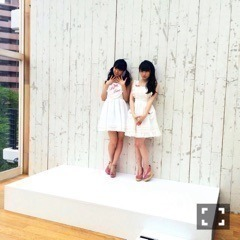
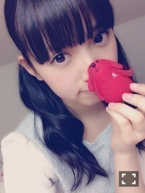

| 2016/01 19 Tue | ひめたん-0o0-その506 |
日曜の夜はらじらー！サンデー
声優アーツにMachicoさん、
乃木坂からは秋元真夏ちゃんが
来てくれました！
「ずっきゅんプリンセス」
ほんとに実現したいな～♡
去年から密かに言ってるけど
昨日改めてそう思いました(´｡•ω•｡`)
ラジオの中ではなかなか
殺伐としたバトルをやっておりました
もちろん全部ネタなんですが
終わってからわざわざ真夏さんが
気を遣って私にメールをくれて
なんてやさしいんだと......。
そんな真夏さんが好きです(´｡•ω•｡`)
ブログも見たよ！ごはん会！

オリラジさんと久々にお会いして
お話できたのも嬉しかった⊂( ˆωˆ )⊃
スタッフの皆さんにも
新年のご挨拶ができました～
紅白も観てくださってた⊂( ˆωˆ )⊃
こんな風に応援してくれている
らじらーファミリーに
今年はもっと恩返しできるよう
頑張らなきゃなと改めて思った一日でした。
あ、そうそう
本編の中であんま言わなかったけれど
ツイッターもみてるよ！
#nhkらじらー
でツイートしてくれたら
オリラジさんや私やスタッフさんが
チェックしてるので良かったら。
次回デニム履いていきまーす

乃木坂工事中は
身内モノマネ大会 前編！
かずみんとひめたんのモノマネを
してくれるメンバーがたくさんいましたね！
いやあ嬉しいことですよ( ˇωˇ )
実際にしてくれた子以外にも
いろんなメンバーが
ひめたんのモノマネしたかったんだ～て
言ってくれました。
かなりん、陽菜ちゃん、さゆ、ありがとう！
おに魂でゆったんが
私のモノマネしてくれたんだよね
ゆったんありがとう！
みんな口を揃えて言うんだ
「あれは尊敬の意を込めてですね......」
「ほら、ひめたんのこと大好きだからさ」
「ひめたんdisってるわけじゃないからね！」
いいんだ！いいんだよ私は！
そうやってモノマネしてくれることが
嬉しいから私はいいんだよ！寧ろ嬉しい！！
こうなったらみんなもどんどん
私のマネをしてください！！くぅー！！
今まで無意識だったけれど
これからちょっと意識しちゃいそう
どうしましょう。笑
ライブ「扇風機」の前奏・ラストのハケ方、
全国握手会での第一声、
注目してみてくださいよろしくお願いします
みんな芸達者なので
こんなもんじゃ終わりません
来週は後編ですね、楽しみに( ˇωˇ )
べろっ子ひめたんの写メ探したんですが
これがMAXでした( ´ ･ω･ ` )
やっぱ無意識なのかな
みんなよく周りを見てるよね。尊敬だよ。
さて、少しですが告知します！
2/6 トップエール
2/9 BOMB
他にもお話したいことがもう少し。
情報解禁お待ちくださいませ......♪
プライベート感満載な一枚。
これいつだっけ、だいぶ前な気がする。
こっからはプライベートなお話。
Kちゃんのライブに
行かせていただきました！
ソニレコの時の
お兄ちゃんの顔とは全然違った、
アーティストのKさんでした。
とてもとても素敵だった！
鍵盤の音を一つ鳴らす瞬間に
空気がガラッと変わるのが伝わって
ゾワッとしました。
私はステージに立つ側の人間だけれど
皆さんにそんな緊張感とかパワーとか
いろんな感情を与えられているのかなって
ライブを観て改めて感じました。
ちょっと真面目になっちゃった☆
次のソニレコ収録が楽しみです！
2日間お疲れ様でした！
あとはねー、
最近、ほんとに最近、
ここ2、3日のマイブームは
ブラックコーヒー！
コーヒーメーカー買おっかなって
探してるくらいにはマイブーム。
いつまで続くんでしょうか、
でも身体にいいんだよね( ˇωˇ )
途中ミルクたっぷりなコーヒー挟んだら
これ甘ったるいなって感じたんだから
よほどブームきてると思うんだ私の中で。
こうして人は
オトナになっていくんですね( ˇωˇ )

ではではおやすみなさい～！
(＊´・ω・＊)
コメント(1024)
2016/01/19 23:42